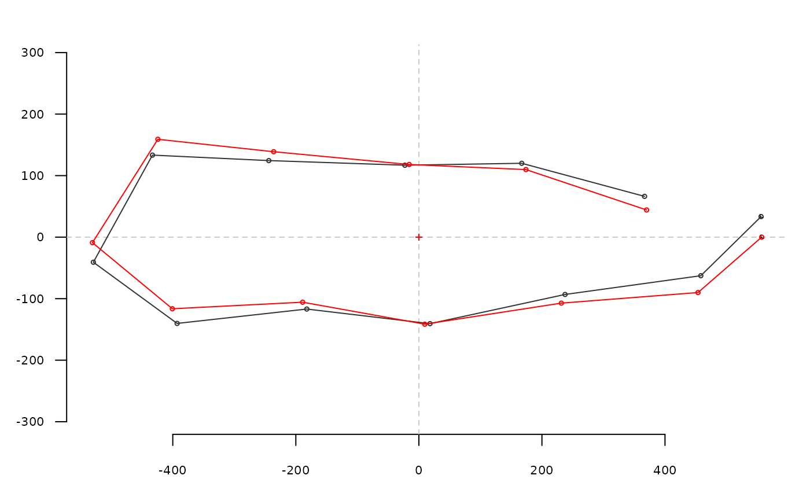
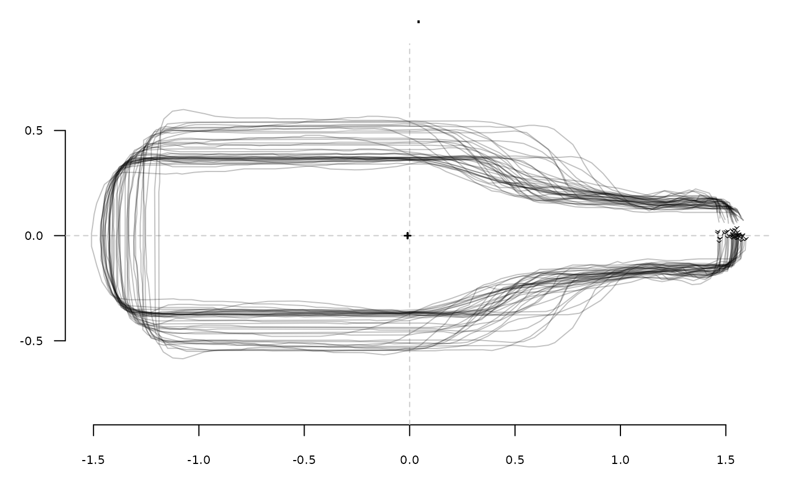
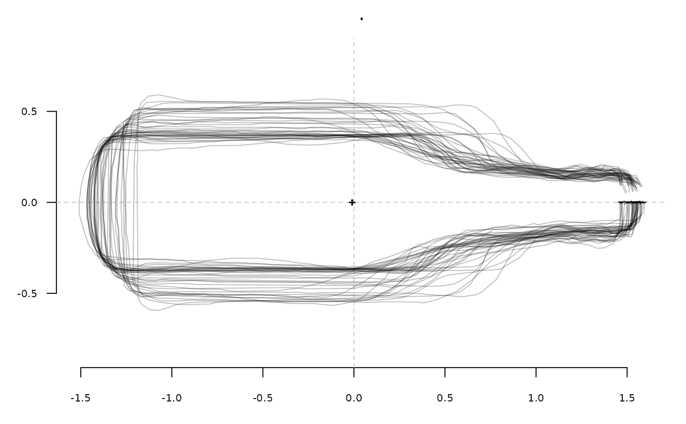
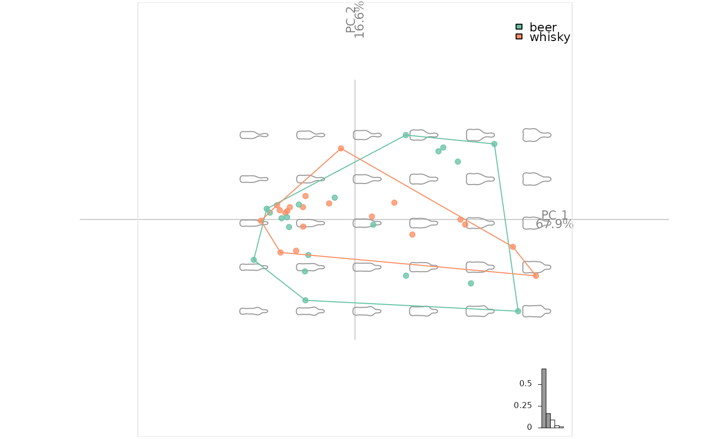
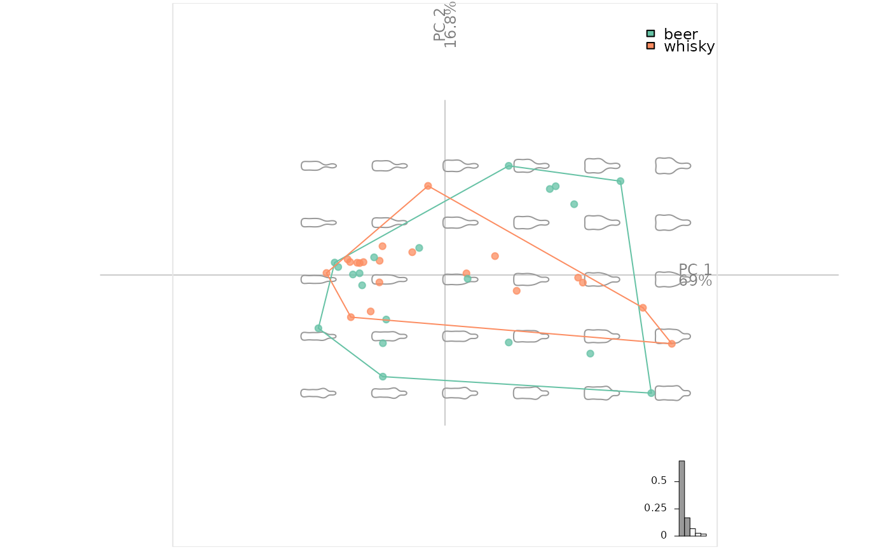
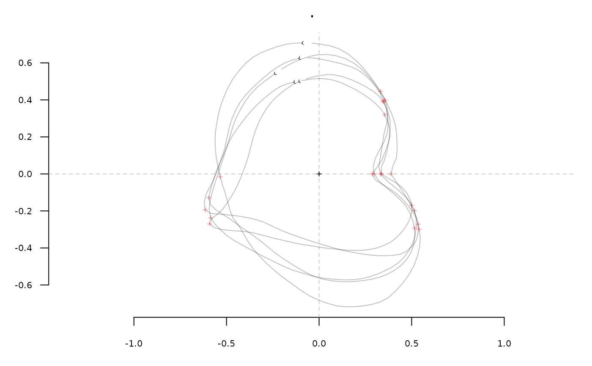

Removes rotation so that the centroid and a given point are parallel to the x-axis
Source:R/coo-utilities.R
coo_untiltx.RdRotationnal biases appear after coo_slidedirection (and friends). Typically useful for outline analysis where phasing matters. See examples.
Arguments
- coo
matrixof(x; y)coordinates or any Coo object.- id
numericthe id of the point that will become the new first point. See details below for the method on Coo objects.- ldk
numericthe id of the ldk to use as id, only onOut
Value
a matrix of (x; y) coordinates, or a Coo object.
Details
For Coo objects, and in particular for Out and Opn two different ways of coo_sliding are available:
no ldk passed and an id is passed: all id-th points within the shapes will become the first points.
a single ldk is passed: the ldk-th ldk will be used to slide every shape. If an id is (also) passed, id is ignored with a message.
See also
coo_slide and friends.
Other coo_ utilities:
coo_align(),
coo_aligncalliper(),
coo_alignminradius(),
coo_alignxax(),
coo_baseline(),
coo_bookstein(),
coo_boundingbox(),
coo_calliper(),
coo_centdist(),
coo_center(),
coo_centpos(),
coo_close(),
coo_down(),
coo_dxy(),
coo_extract(),
coo_flipx(),
coo_force2close(),
coo_interpolate(),
coo_is_closed(),
coo_jitter(),
coo_left(),
coo_likely_clockwise(),
coo_nb(),
coo_perim(),
coo_range(),
coo_rev(),
coo_right(),
coo_rotate(),
coo_rotatecenter(),
coo_sample(),
coo_sample_prop(),
coo_samplerr(),
coo_scale(),
coo_shearx(),
coo_slice(),
coo_slide(),
coo_slidedirection(),
coo_slidegap(),
coo_smooth(),
coo_smoothcurve(),
coo_template(),
coo_trans(),
coo_trim(),
coo_trimbottom(),
coo_trimtop(),
coo_up(),
is_equallyspacedradii()
Examples
# on a single shape
bot[1] %>% coo_center %>% coo_align %>%
coo_sample(12) %>% coo_slidedirection("right") %T>%
coo_plot() %>% # the first point is not on the x-axis
coo_untiltx() %>%
coo_draw(border="red") # this (red) one is

# on an Out
# prepare bot
prebot <- bot %>% coo_center %>% coo_scale %>%
coo_align %>% coo_slidedirection("right")
prebot %>% stack # some dephasing remains

prebot %>% coo_slidedirection("right") %>% coo_untiltx() %>% stack # much better

# _here_ there is no change but the second, untilted, is correct
prebot %>% efourier(8, norm=FALSE) %>% PCA %>% plot_PCA(~type)

prebot %>% coo_untiltx %>% efourier(8, norm=FALSE) %>% PCA %>% plot_PCA(~type)

# an example using ldks:
# the landmark #2 is on the x-axis
hearts %>%
slice(1:5) %>% fgProcrustes(tol=1e-3) %>% # for speed sake
coo_center %>% coo_untiltx(ldk=2) %>% stack
#> iteration: 1 gain: 8.1326
#> iteration: 2 gain: 0.00031224
